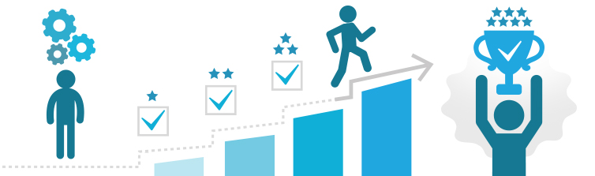

En este proyecto aprenderemos que todas las personas debemos enfrentarnos, en algún momento de la vida, a situaciones que suponen un reto adaptativo o retos difíciles por los que todas las personas debemos enfrentarnos, en algún momento de la vida, a situaciones que suponen un reto adaptativo Un proyecto de vida puede definirse como un plan fundamental para la existencia. En su elaboración deben considerarse una serie de variables, tales como necesidades u objetivos, que pueden coincidir o no con las expectativas que el entorno depositó sobre nosotros. Un proyecto de vida es una labor en construcción permanente que sigue cierta continuidad, pero adaptada a la situación de cada momento este con la finalidad de tener planeado lo que nos gustara y lo que no nos gustara para nuestra vida en un furo y de este modo ir planeando cosas a largo y sobre todo a corto plazo . .
mi proyecto de vida esta basado en lo que me gustaria y en lo que no me gustaria para mi futuro pues para mi es muy importante tener muy claro lo que me gustara ser tener en mi vida pero sin duda me también creo que es muy importante como persona tener en cuenta y sobre todo muy claro lo que no queremos para nuestra vida pues esto es muy importante pues cada acciono cambia tu futuro en especial las malas pues estas causan consecuencias y afectan a largo y a veces a corto plazo
Un proyecto de vida es el plan que una persona se traza para conseguir objetivos, un camino para alcanzar metas, que da coherencia a la existencia y marca un estilo en el actuar, en relacionarse y en el modo de ver los acontecimientos. Los proyectos de vida están ligados a la vocación, modelos, actitudes, sentido de la vida, objetivos (a cortos, mediano y largo plazo), una lúcida planificación, una buena dosis de motivación y otros aspectos sociales. Con el cual se hace una idea o panorama de lo que deseas hacer en el futuro y cuales son algunas de las metas que quieres cumplir y también las que salgan de imprevisto y lograrlas Asimismo, los proyectos de vida potencian la llamada motivación intrínseca, que mantiene nuestro esfuerzo al margen de los incentivos externos (económicos, sociales o de otro tipo). Dado que permite determinar qué propósitos son significativos para nosotros a largo plazo, es mucho menos probable que cedamos al hastío cuando surjan obstáculos que impidan o dificulten su consecución inmediata. Por último, el proyecto de vida nos permite pertrecharnos de un mayor autoconocimiento, pues su diseño implica una exploración atenta del cómo y del porqué. Esta búsqueda, que tiene un importante componente introspectivo, suele pasar desapercibida para las personas que se enrolan en un cúmulo desbordante de acciones que las alienan de sí mismas. .

· Tu objetivo principal.
· Acciones para lograr el objetivo
· Plazo de consecución
· Desafíos que encontrarás por el camino.
· Focaliza la energía la que quiere alcanzar.
· Alinea las decisiones.
· Pasar a la acción
La Teoria del color
Teoria de colorEstrategias y Tecnicas de Estudio
Estrategias y Tecnicas de Estudio